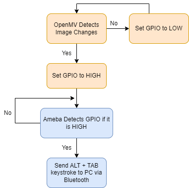

<!DOCTYPE html>
<html class="writer-html5" lang="en" >
<head>
  <meta charset="utf-8" /><meta name="generator" content="Docutils 0.17.1: http://docutils.sourceforge.net/" />

  <meta name="viewport" content="width=device-width, initial-scale=1.0" />
  <title>OpenMV Bluetooth TripWire &mdash; 123 123 documentation</title>
      <link rel="stylesheet" href="../../../../_static/pygments.css" type="text/css" />
      <link rel="stylesheet" href="../../../../_static/css/theme.css" type="text/css" />
  <!--[if lt IE 9]>
    <script src="../../../../_static/js/html5shiv.min.js"></script>
  <![endif]-->
  
        <script data-url_root="../../../../" id="documentation_options" src="../../../../_static/documentation_options.js"></script>
        <script src="../../../../_static/jquery.js"></script>
        <script src="../../../../_static/underscore.js"></script>
        <script src="../../../../_static/_sphinx_javascript_frameworks_compat.js"></script>
        <script src="../../../../_static/doctools.js"></script>
    <script src="../../../../_static/js/theme.js"></script>
    <link rel="index" title="Index" href="../../../../genindex.html" />
    <link rel="search" title="Search" href="../../../../search.html" />
    <link rel="next" title="Audio Codec - DIY MP3" href="Audio%20Codec%20-%20DIY%20MP3.html" />
    <link rel="prev" title="AMB23 Getting Started Guide" href="AMB23%20Getting%20Started%20Guide.html" /> 
</head>

<body class="wy-body-for-nav"> 
  <div class="wy-grid-for-nav">
    <nav data-toggle="wy-nav-shift" class="wy-nav-side">
      <div class="wy-side-scroll">
        <div class="wy-side-nav-search" >
            <a href="../../../../index.html" class="icon icon-home"> 123
          </a>
<div role="search">
  <form id="rtd-search-form" class="wy-form" action="../../../../search.html" method="get">
    <input type="text" name="q" placeholder="Search docs" />
    <input type="hidden" name="check_keywords" value="yes" />
    <input type="hidden" name="area" value="default" />
  </form>
</div>
        </div><div class="wy-menu wy-menu-vertical" data-spy="affix" role="navigation" aria-label="Navigation menu">
              <p class="caption" role="heading"><span class="caption-text">Open Source SDKs</span></p>
<ul class="current">
<li class="toctree-l1 current"><a class="reference internal" href="../../../arduino_index.html">Arduino SDK</a><ul class="current">
<li class="toctree-l2"><a class="reference internal" href="../../../AMB21/index.html">AMB21/AMB22 (RTL8722DM/RTL8722CSM)</a></li>
<li class="toctree-l2 current"><a class="reference internal" href="../../index.html">AMB23 (RTL8722DM MINI)</a><ul class="current">
<li class="toctree-l3"><a class="reference internal" href="../../getting_started/ambd_mini_getting_started.html">Getting Started</a></li>
<li class="toctree-l3 current"><a class="reference internal" href="../index.html">Examples &amp; Components</a><ul class="current">
<li class="toctree-l4"><a class="reference internal" href="../Basic%20Examples.html">Basic Examples</a></li>
<li class="toctree-l4"><a class="reference internal" href="../Network%20Examples/index.html">Network Examples</a></li>
<li class="toctree-l4"><a class="reference internal" href="../Peripheral%20Examples/index.html">Peripheral Examples</a></li>
<li class="toctree-l4 current"><a class="reference internal" href="index.html">Community Examples</a></li>
<li class="toctree-l4"><a class="reference internal" href="../Components%20Used.html">Components Used</a></li>
</ul>
</li>
<li class="toctree-l3"><a class="reference internal" href="../../release_history/Release_History.html">Release History</a></li>
<li class="toctree-l3"><a class="reference internal" href="../../api_documents/index.html">API Documents</a></li>
<li class="toctree-l3"><a class="reference internal" href="../../resources/index.html">Resources</a></li>
<li class="toctree-l3"><a class="reference internal" href="../../support/index.html">Support</a></li>
</ul>
</li>
<li class="toctree-l2"><a class="reference internal" href="../../../BW16_/index.html">BW16 (RTL8720DN)</a></li>
</ul>
</li>
<li class="toctree-l1"><a class="reference internal" href="../../../../ambd_micropython/micropython_index.html">MicroPython SDK</a></li>
<li class="toctree-l1"><a class="reference internal" href="../../../../ambd_sdk/source/index.html">Standard SDK</a></li>
</ul>
<p class="caption" role="heading"><span class="caption-text">Download</span></p>
<ul>
<li class="toctree-l1"><a class="reference internal" href="../../../../download/AMB21_download.html">AMB21/AMB22 (RTL8722DM/RTL8722CSM)</a></li>
<li class="toctree-l1"><a class="reference internal" href="../../../../download/AMB23_download.html">AMB23 (RTL8722DM MINI)</a></li>
<li class="toctree-l1"><a class="reference internal" href="../../../../download/BW16_download.html">BW16 (RTL8720DN)</a></li>
</ul>

        </div>
      </div>
    </nav>

    <section data-toggle="wy-nav-shift" class="wy-nav-content-wrap"><nav class="wy-nav-top" aria-label="Mobile navigation menu" >
          <i data-toggle="wy-nav-top" class="fa fa-bars"></i>
          <a href="../../../../index.html">123</a>
      </nav>

      <div class="wy-nav-content">
        <div class="rst-content">
          <div role="navigation" aria-label="Page navigation">
  <ul class="wy-breadcrumbs">
      <li><a href="../../../../index.html" class="icon icon-home"></a> &raquo;</li>
          <li><a href="../../../arduino_index.html">Arduino SDK</a> &raquo;</li>
          <li><a href="../../index.html">AMB23 (RTL8722DM MINI)</a> &raquo;</li>
          <li><a href="../index.html">Examples &amp; Components</a> &raquo;</li>
          <li><a href="index.html">Community Examples</a> &raquo;</li>
      <li>OpenMV Bluetooth TripWire</li>
      <li class="wy-breadcrumbs-aside">
            <a href="../../../../_sources/ambd_arduino/AMB23/examples_and_components/Community Examples/OpenMV Bluetooth TripWire.rst.txt" rel="nofollow"> View page source</a>
      </li>
  </ul>
  <hr/>
</div>
          <div role="main" class="document" itemscope="itemscope" itemtype="http://schema.org/Article">
           <div itemprop="articleBody">
             
  <section id="openmv-bluetooth-tripwire">
<h1>OpenMV Bluetooth TripWire<a class="headerlink" href="#openmv-bluetooth-tripwire" title="Permalink to this heading"></a></h1>
<p><strong>CONTRIBUTED BY: SIMON XI</strong> (<a class="reference external" href="https://github.com/xidameng">https://github.com/xidameng</a> )</p>
<div class="line-block">
<div class="line">Hi if you haven’t watched the demo video, feel free to play
this short clip below to see what it’s capable of.</div>
</div>
<p><span class="raw-html"><p style="color:#E67E22; font-size:24px"></span>
<span class="raw-html"></p></span></p>
<blockquote>
<div><style="position: relative; padding-bottom: 56.25%; height: 0; overflow: hidden; max-width: auto; height: auto;">
    <iframe width="640" height="360" src="https://www.youtube.com/embed/gCpC2uOva90" title="OpenMV Bluetooth TripWire" frameborder="0" allow="accelerometer; autoplay; clipboard-write; encrypted-media; gyroscope; picture-in-picture" allowfullscreen></iframe></div></blockquote>
<section id="introduction">
<h2>Introduction<a class="headerlink" href="#introduction" title="Permalink to this heading"></a></h2>
<p>This project took the inspiration from the another open-source
project <strong>daytripper</strong> (<a class="reference external" href="https://github.com/dekuNukem/daytripper">link 1</a>)
which uses 2 seperate devices to detect movement and control your PC to
switch Apps. However, I think if we go with the Computer Vision solution
instead, we might reduce the number of hardware to just 1, and we can
even push it a little further by adding some more cool features like
face recognition, speed detection and even more.</p>
<p>That’s how I came up with this idea – using <strong>OpenMV</strong>, which is littler
and easier to deploy, and a <strong>IoT Microcontroller</strong>, in this case Ameba
RTL8722DM_MINI, together we can achieve the same function
as <strong>daytripper</strong> and more.</p>
</section>
<section id="components">
<h2>Components<a class="headerlink" href="#components" title="Permalink to this heading"></a></h2>
<blockquote>
<div><ol class="arabic simple">
<li><p>AMB23 (RTL8722DM MINI) dev board x1</p></li>
<li><p>OpenMV( any model) dev board x1</p></li>
</ol>
<p>Connection is simple, just connect P0 pin on OpenMV to pin 9 on Ameba Board.</p>
</div></blockquote>
</section>
<section id="function-flow">
<h2>Function Flow<a class="headerlink" href="#function-flow" title="Permalink to this heading"></a></h2>
<p>This is how it works,</p>
<p><a class="reference internal" href="../../../../_images/image190.png"></a></p>
</section>
<section id="code">
<h2>Code<a class="headerlink" href="#code" title="Permalink to this heading"></a></h2>
<section id="openmv">
<h3>OpenMV<a class="headerlink" href="#openmv" title="Permalink to this heading"></a></h3>
<div class="highlight-python notranslate"><div class="highlight"><pre><span></span><span class="c1"># Advanced Frame Differencing Example</span>
<span class="c1">#</span>
<span class="c1"># This example demonstrates using frame differencing with your OpenMV Cam. This</span>
<span class="c1"># example is advanced because it preforms a background update to deal with the</span>
<span class="c1"># backgound image changing overtime.</span>

<span class="kn">import</span> <span class="nn">sensor</span><span class="o">,</span> <span class="nn">image</span><span class="o">,</span> <span class="nn">pyb</span><span class="o">,</span> <span class="nn">os</span><span class="o">,</span> <span class="nn">time</span>
<span class="kn">from</span> <span class="nn">pyb</span> <span class="kn">import</span> <span class="n">Pin</span>

<span class="n">p_out</span> <span class="o">=</span> <span class="n">Pin</span><span class="p">(</span><span class="s1">&#39;P0&#39;</span><span class="p">,</span> <span class="n">Pin</span><span class="o">.</span><span class="n">OUT_PP</span><span class="p">)</span>
<span class="n">p_out</span><span class="o">.</span><span class="n">low</span><span class="p">()</span>

<span class="n">TRIGGER_THRESHOLD</span> <span class="o">=</span> <span class="mi">5</span>

<span class="n">BG_UPDATE_FRAMES</span> <span class="o">=</span> <span class="mi">50</span> <span class="c1"># How many frames before blending.</span>
<span class="n">BG_UPDATE_BLEND</span> <span class="o">=</span> <span class="mi">128</span> <span class="c1"># How much to blend by... ([0-256]==[0.0-1.0]).</span>

<span class="n">sensor</span><span class="o">.</span><span class="n">reset</span><span class="p">()</span> <span class="c1"># Initialize the camera sensor.</span>
<span class="n">sensor</span><span class="o">.</span><span class="n">set_pixformat</span><span class="p">(</span><span class="n">sensor</span><span class="o">.</span><span class="n">RGB565</span><span class="p">)</span> <span class="c1"># or sensor.RGB565</span>
<span class="n">sensor</span><span class="o">.</span><span class="n">set_framesize</span><span class="p">(</span><span class="n">sensor</span><span class="o">.</span><span class="n">QVGA</span><span class="p">)</span> <span class="c1"># or sensor.QQVGA (or others)</span>
<span class="n">sensor</span><span class="o">.</span><span class="n">skip_frames</span><span class="p">(</span><span class="n">time</span> <span class="o">=</span> <span class="mi">2000</span><span class="p">)</span> <span class="c1"># Let new settings take affect.</span>
<span class="n">sensor</span><span class="o">.</span><span class="n">set_auto_whitebal</span><span class="p">(</span><span class="kc">False</span><span class="p">)</span> <span class="c1"># Turn off white balance.</span>
<span class="n">clock</span> <span class="o">=</span> <span class="n">time</span><span class="o">.</span><span class="n">clock</span><span class="p">()</span> <span class="c1"># Tracks FPS.</span>

<span class="c1"># Take from the main frame buffer&#39;s RAM to allocate a second frame buffer.</span>
<span class="c1"># There&#39;s a lot more RAM in the frame buffer than in the MicroPython heap.</span>
<span class="c1"># However, after doing this you have a lot less RAM for some algorithms...</span>
<span class="c1"># So, be aware that it&#39;s a lot easier to get out of RAM issues now. However,</span>
<span class="c1"># frame differencing doesn&#39;t use a lot of the extra space in the frame buffer.</span>
<span class="c1"># But, things like AprilTags do and won&#39;t work if you do this...</span>
<span class="n">extra_fb</span> <span class="o">=</span> <span class="n">sensor</span><span class="o">.</span><span class="n">alloc_extra_fb</span><span class="p">(</span><span class="n">sensor</span><span class="o">.</span><span class="n">width</span><span class="p">(),</span> <span class="n">sensor</span><span class="o">.</span><span class="n">height</span><span class="p">(),</span> <span class="n">sensor</span><span class="o">.</span><span class="n">RGB565</span><span class="p">)</span>

<span class="nb">print</span><span class="p">(</span><span class="s2">&quot;About to save background image...&quot;</span><span class="p">)</span>
<span class="n">sensor</span><span class="o">.</span><span class="n">skip_frames</span><span class="p">(</span><span class="n">time</span> <span class="o">=</span> <span class="mi">2000</span><span class="p">)</span> <span class="c1"># Give the user time to get ready.</span>
<span class="n">extra_fb</span><span class="o">.</span><span class="n">replace</span><span class="p">(</span><span class="n">sensor</span><span class="o">.</span><span class="n">snapshot</span><span class="p">())</span>
<span class="nb">print</span><span class="p">(</span><span class="s2">&quot;Saved background image - Now frame differencing!&quot;</span><span class="p">)</span>

<span class="n">triggered</span> <span class="o">=</span> <span class="kc">False</span>

<span class="n">frame_count</span> <span class="o">=</span> <span class="mi">0</span>
<span class="k">while</span><span class="p">(</span><span class="kc">True</span><span class="p">):</span>
    <span class="n">clock</span><span class="o">.</span><span class="n">tick</span><span class="p">()</span> <span class="c1"># Track elapsed milliseconds between snapshots().</span>
    <span class="n">img</span> <span class="o">=</span> <span class="n">sensor</span><span class="o">.</span><span class="n">snapshot</span><span class="p">()</span> <span class="c1"># Take a picture and return the image.</span>

    <span class="n">frame_count</span> <span class="o">+=</span> <span class="mi">1</span>
    <span class="k">if</span> <span class="p">(</span><span class="n">frame_count</span> <span class="o">&gt;</span> <span class="n">BG_UPDATE_FRAMES</span><span class="p">):</span>
        <span class="n">frame_count</span> <span class="o">=</span> <span class="mi">0</span>
        <span class="c1"># Blend in new frame. We&#39;re doing 256-alpha here because we want to</span>
        <span class="c1"># blend the new frame into the backgound. Not the background into the</span>
        <span class="c1"># new frame which would be just alpha. Blend replaces each pixel by</span>
        <span class="c1"># ((NEW*(alpha))+(OLD*(256-alpha)))/256. So, a low alpha results in</span>
        <span class="c1"># low blending of the new image while a high alpha results in high</span>
        <span class="c1"># blending of the new image. We need to reverse that for this update.</span>
        <span class="n">img</span><span class="o">.</span><span class="n">blend</span><span class="p">(</span><span class="n">extra_fb</span><span class="p">,</span> <span class="n">alpha</span><span class="o">=</span><span class="p">(</span><span class="mi">256</span><span class="o">-</span><span class="n">BG_UPDATE_BLEND</span><span class="p">))</span>
        <span class="n">extra_fb</span><span class="o">.</span><span class="n">replace</span><span class="p">(</span><span class="n">img</span><span class="p">)</span>

<span class="c1"># Replace the image with the &quot;abs(NEW-OLD)&quot; frame difference.</span>
<span class="n">img</span><span class="o">.</span><span class="n">difference</span><span class="p">(</span><span class="n">extra_fb</span><span class="p">)</span>

<span class="n">hist</span> <span class="o">=</span> <span class="n">img</span><span class="o">.</span><span class="n">get_histogram</span><span class="p">()</span>
<span class="c1"># This code below works by comparing the 99th percentile value (e.g. the</span>
<span class="c1"># non-outlier max value against the 90th percentile value (e.g. a non-max</span>
<span class="c1"># value. The difference between the two values will grow as the difference</span>
<span class="c1"># image seems more pixels change.</span>
<span class="n">diff</span> <span class="o">=</span> <span class="n">hist</span><span class="o">.</span><span class="n">get_percentile</span><span class="p">(</span><span class="mf">0.99</span><span class="p">)</span><span class="o">.</span><span class="n">l_value</span><span class="p">()</span> <span class="o">-</span> <span class="n">hist</span><span class="o">.</span><span class="n">get_percentile</span><span class="p">(</span><span class="mf">0.98</span><span class="p">)</span><span class="o">.</span><span class="n">l_value</span><span class="p">()</span>
<span class="n">triggered</span> <span class="o">=</span> <span class="n">diff</span> <span class="o">&gt;</span> <span class="n">TRIGGER_THRESHOLD</span>

<span class="k">if</span> <span class="n">triggered</span> <span class="o">==</span> <span class="kc">True</span><span class="p">:</span>
    <span class="n">p_out</span><span class="o">.</span><span class="n">high</span><span class="p">()</span>
<span class="k">else</span><span class="p">:</span>
    <span class="n">p_out</span><span class="o">.</span><span class="n">low</span><span class="p">()</span>


<span class="nb">print</span><span class="p">(</span><span class="n">clock</span><span class="o">.</span><span class="n">fps</span><span class="p">(),</span> <span class="n">triggered</span><span class="p">)</span> <span class="c1"># Note: Your OpenMV Cam runs about half as fast while</span>
<span class="c1"># connected to your computer. The FPS should increase once disconnected.</span>
</pre></div>
</div>
</section>
<section id="amb23">
<h3>AMB23<a class="headerlink" href="#amb23" title="Permalink to this heading"></a></h3>
<div class="highlight-cpp notranslate"><div class="highlight"><pre><span></span><span class="cp">#include</span><span class="w"> </span><span class="cpf">&quot;BLEHIDDevice.h&quot;</span><span class="cp"></span>
<span class="cp">#include</span><span class="w"> </span><span class="cpf">&quot;BLEHIDKeyboard.h&quot;</span><span class="cp"></span>
<span class="cp">#include</span><span class="w"> </span><span class="cpf">&quot;BLEDevice.h&quot;</span><span class="cp"></span>

<span class="n">BLEHIDKeyboard</span><span class="w"> </span><span class="n">keyboardDev</span><span class="p">;</span><span class="w"></span>
<span class="n">BLEAdvertData</span><span class="w"> </span><span class="n">advdata</span><span class="p">;</span><span class="w"></span>

<span class="cp">#define ENABLE_PIN 9</span>

<span class="kt">void</span><span class="w"> </span><span class="nf">setup</span><span class="p">()</span><span class="w"> </span><span class="p">{</span><span class="w"></span>
<span class="n">Serial</span><span class="p">.</span><span class="n">begin</span><span class="p">(</span><span class="mi">115200</span><span class="p">);</span><span class="w"></span>
<span class="n">advdata</span><span class="p">.</span><span class="n">addFlags</span><span class="p">();</span><span class="w"></span>
<span class="n">advdata</span><span class="p">.</span><span class="n">addCompleteName</span><span class="p">(</span><span class="s">&quot;AMEBA_BLE_HID&quot;</span><span class="p">);</span><span class="w"></span>
<span class="n">advdata</span><span class="p">.</span><span class="n">addAppearance</span><span class="p">(</span><span class="n">GAP_GATT_APPEARANCE_HUMAN_INTERFACE_DEVICE</span><span class="p">);</span><span class="w"></span>
<span class="n">advdata</span><span class="p">.</span><span class="n">addCompleteServices</span><span class="p">(</span><span class="n">BLEUUID</span><span class="p">(</span><span class="n">HID_SERVICE_UUID</span><span class="p">));</span><span class="w"></span>

<span class="n">BLEHIDDev</span><span class="p">.</span><span class="n">init</span><span class="p">();</span><span class="w"></span>

<span class="n">BLE</span><span class="p">.</span><span class="n">init</span><span class="p">();</span><span class="w"></span>
<span class="n">BLE</span><span class="p">.</span><span class="n">configAdvert</span><span class="p">()</span><span class="o">-&gt;</span><span class="n">setAdvData</span><span class="p">(</span><span class="n">advdata</span><span class="p">);</span><span class="w"></span>
<span class="n">BLE</span><span class="p">.</span><span class="n">setDeviceName</span><span class="p">(</span><span class="s">&quot;AMEBA_BLE_HID&quot;</span><span class="p">);</span><span class="w"></span>
<span class="n">BLE</span><span class="p">.</span><span class="n">setDeviceAppearance</span><span class="p">(</span><span class="n">GAP_GATT_APPEARANCE_HUMAN_INTERFACE_DEVICE</span><span class="p">);</span><span class="w"></span>
<span class="n">BLE</span><span class="p">.</span><span class="n">configSecurity</span><span class="p">()</span><span class="o">-&gt;</span><span class="n">setPairable</span><span class="p">(</span><span class="nb">true</span><span class="p">);</span><span class="w"></span>
<span class="n">BLE</span><span class="p">.</span><span class="n">configSecurity</span><span class="p">()</span><span class="o">-&gt;</span><span class="n">setAuthFlags</span><span class="p">(</span><span class="n">GAP_AUTHEN_BIT_BONDING_FLAG</span><span class="p">);</span><span class="w"></span>
<span class="n">BLE</span><span class="p">.</span><span class="n">configServer</span><span class="p">(</span><span class="mi">3</span><span class="p">);</span><span class="w"></span>
<span class="n">BLE</span><span class="p">.</span><span class="n">addService</span><span class="p">(</span><span class="n">BLEHIDDev</span><span class="p">.</span><span class="n">hidService</span><span class="p">());</span><span class="w"></span>
<span class="n">BLE</span><span class="p">.</span><span class="n">addService</span><span class="p">(</span><span class="n">BLEHIDDev</span><span class="p">.</span><span class="n">battService</span><span class="p">());</span><span class="w"></span>
<span class="n">BLE</span><span class="p">.</span><span class="n">addService</span><span class="p">(</span><span class="n">BLEHIDDev</span><span class="p">.</span><span class="n">devInfoService</span><span class="p">());</span><span class="w"></span>

<span class="n">pinMode</span><span class="p">(</span><span class="n">ENABLE_PIN</span><span class="p">,</span><span class="w"> </span><span class="n">INPUT</span><span class="p">);</span><span class="w"></span>

<span class="n">BLE</span><span class="p">.</span><span class="n">beginPeripheral</span><span class="p">();</span><span class="w"></span>
<span class="p">}</span><span class="w"></span>

<span class="kt">int</span><span class="w"> </span><span class="n">flag</span><span class="w"> </span><span class="o">=</span><span class="w"> </span><span class="mi">0</span><span class="p">;</span><span class="w"></span>

<span class="kt">void</span><span class="w"> </span><span class="nf">loop</span><span class="p">()</span><span class="w"> </span><span class="p">{</span><span class="w"></span>
<span class="k">if</span><span class="w"> </span><span class="p">(</span><span class="n">BLE</span><span class="p">.</span><span class="n">connected</span><span class="p">()</span><span class="w"> </span><span class="o">&amp;&amp;</span><span class="w"> </span><span class="n">digitalRead</span><span class="p">(</span><span class="n">ENABLE_PIN</span><span class="p">)</span><span class="w"> </span><span class="o">&amp;&amp;</span><span class="w"> </span><span class="n">flag</span><span class="w"> </span><span class="o">==</span><span class="w"> </span><span class="mi">0</span><span class="p">)</span><span class="w"> </span><span class="p">{</span><span class="w"></span>
<span class="w">    </span><span class="n">Serial</span><span class="p">.</span><span class="n">println</span><span class="p">(</span><span class="s">&quot;Sending keystrokes&quot;</span><span class="p">);</span><span class="w"></span>
<span class="w">    </span><span class="n">keyboardDev</span><span class="p">.</span><span class="n">keyReleaseAll</span><span class="p">();</span><span class="w"></span>
<span class="w">    </span><span class="n">delay</span><span class="p">(</span><span class="mi">100</span><span class="p">);</span><span class="w"></span>
<span class="w">    </span><span class="n">keyboardDev</span><span class="p">.</span><span class="n">keyPress</span><span class="p">(</span><span class="n">HID_KEY_ALT_LEFT</span><span class="p">);</span><span class="w"></span>
<span class="w">    </span><span class="n">delay</span><span class="p">(</span><span class="mi">100</span><span class="p">);</span><span class="w"></span>
<span class="w">    </span><span class="n">keyboardDev</span><span class="p">.</span><span class="n">keyPress</span><span class="p">(</span><span class="n">HID_KEY_TAB</span><span class="p">);</span><span class="w"></span>
<span class="w">    </span><span class="n">keyboardDev</span><span class="p">.</span><span class="n">keyReleaseAll</span><span class="p">();</span><span class="w"></span>
<span class="w">    </span><span class="n">delay</span><span class="p">(</span><span class="mi">100</span><span class="p">);</span><span class="w"></span>
<span class="w">    </span><span class="n">flag</span><span class="w"> </span><span class="o">=</span><span class="w"> </span><span class="mi">1</span><span class="p">;</span><span class="w"></span>
<span class="p">}</span><span class="w"> </span><span class="k">else</span><span class="w"> </span><span class="p">{</span><span class="w"></span>
<span class="w">    </span><span class="n">flag</span><span class="w"> </span><span class="o">=</span><span class="w"> </span><span class="mi">0</span><span class="p">;</span><span class="w"></span>
<span class="w">    </span><span class="n">delay</span><span class="p">(</span><span class="mi">100</span><span class="p">);</span><span class="w"></span>
<span class="p">}</span><span class="w"></span>
<span class="p">}</span><span class="w"></span>
</pre></div>
</div>
</section>
</section>
<section id="conclusion">
<h2>Conclusion<a class="headerlink" href="#conclusion" title="Permalink to this heading"></a></h2>
<p>This project is not perfect as it’s done in a rush, so if anyone wants
to perfect it you may go ahead and change my code however you like, or
leave a comment below if you have a question or want to discuss
something with me~</p>
<p>Until next time, happy coding.</p>
</section>
</section>


           </div>
          </div>
          <footer><div class="rst-footer-buttons" role="navigation" aria-label="Footer">
        <a href="AMB23%20Getting%20Started%20Guide.html" class="btn btn-neutral float-left" title="AMB23 Getting Started Guide" accesskey="p" rel="prev"><span class="fa fa-arrow-circle-left" aria-hidden="true"></span> Previous</a>
        <a href="Audio%20Codec%20-%20DIY%20MP3.html" class="btn btn-neutral float-right" title="Audio Codec - DIY MP3" accesskey="n" rel="next">Next <span class="fa fa-arrow-circle-right" aria-hidden="true"></span></a>
    </div>

  <hr/>

  <div role="contentinfo">
    <p>&#169; Copyright 2022, 123.</p>
  </div>

  Built with <a href="https://www.sphinx-doc.org/">Sphinx</a> using a
    <a href="https://github.com/readthedocs/sphinx_rtd_theme">theme</a>
    provided by <a href="https://readthedocs.org">Read the Docs</a>.
   

</footer>
        </div>
      </div>
    </section>
  </div>
  <script>
      jQuery(function () {
          SphinxRtdTheme.Navigation.enable(true);
      });
  </script> 

</body>
</html>